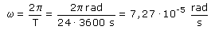
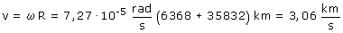
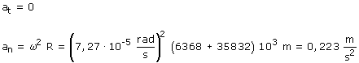

|
  El radio de la órbita es la suma del radio de la Tierra y de la altura de la órbita sobre la Tierra Si la velocidad angular es constante no habrá aceleración angular y por tanto no habrá aceleración tangencial. Sin embargo un cuerpo que gira tiene aceleración normal porque continuamente esta cambiando la dirección de su velocidad lineal.  La aceleración total es la aceleración normal
|